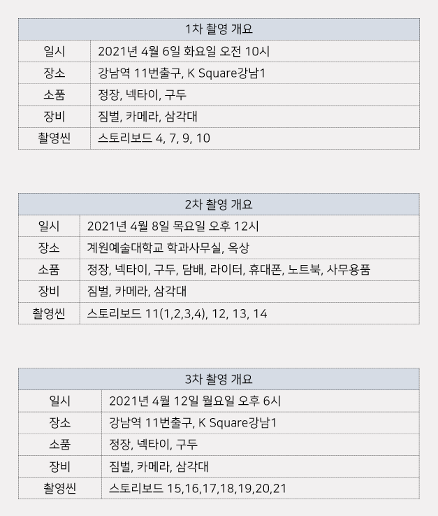
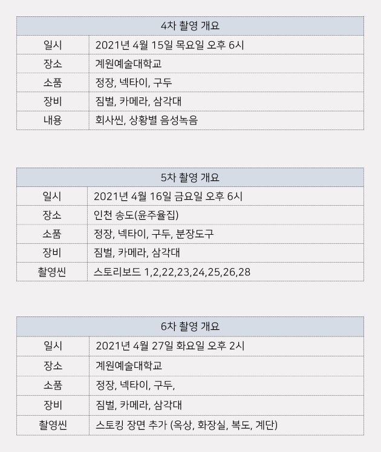
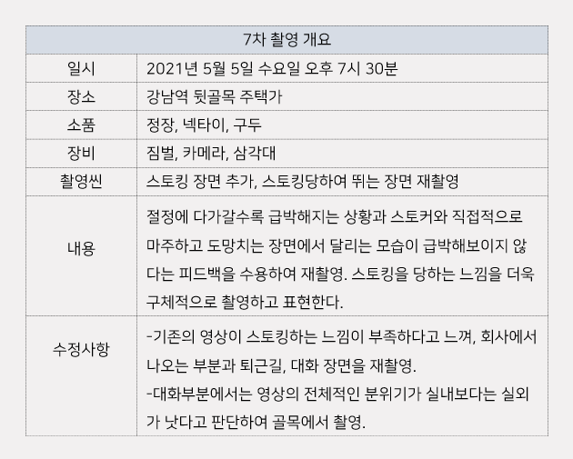

- "하루에 적어도 한 명이 일, 노동으로 극단적인 선택을 한다.
평균 한 해 동안 '직장 또는 업무상 문제로 인한 자살'이 487건이었다.
이는 1년에 일어나는 살인 사건보다 높은 수치이다." - SYNOPSIS : 출근길부터 회사에 있는 시간, 심지어
퇴근길까지 스토킹을 당하고 현관 도어락 앞에서
너 누구야! 외치는데
자기 자신이 보임. 자기 자신은 피떡칠되어 있고 이렇게 힘들게 생활하다가 죽는 자기 자신에게 경고를 주면서 끝난다. -
긴장감, 공포, 의구심을 영상으로 표현한다.
3인칭 시점에서 1인칭 시점으로 전환하여
시청자가 주인공을
스토킹하는 듯한 느낌을 주어 집중을 이끌어 낸다. 음악과 효과음을 통해 전체적인 텐션을 조절하며 스토리를 이끌어간다.


